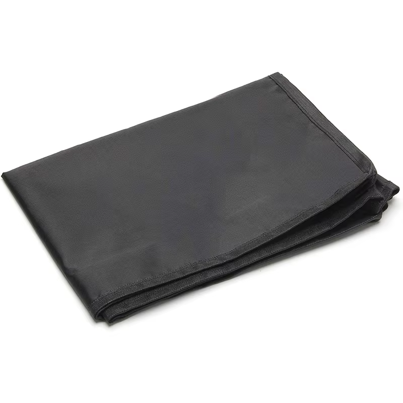

LStechnology
Bem-vindo à LS Technology!
Estamos no mercado há 5 anos e, nesse curto período, nos destacamos com nossas inovações e qualidade de produtos. No último ano, fomos premiados com o Prêmio Canaltech, um dos maiores prêmios de tecnologia no Brasil, pelo nosso Monitor LS Colors Speed.
Promoção Imperdível de Black Friday!
Nesta Black Friday, estamos oferecendo a maior promoção da história da LS Technology! O Monitor LS Colors Speed, que custa R$ 1200,00, está com 30% de desconto. Além disso, disponibilizamos um cupom de primeira compra de 10%, totalizando até 40% de desconto.
Não Perca Esta Oportunidade!
Garanta seu Monitor Premiado por até R$ 720,00, na compra de 2 monitores o frete é gratuito para todo o Brasil. Confira as descrições do produto nos demais cards e aproveite essa oferta incrível!
Estamos no mercado há 5 anos e, nesse curto período, nos destacamos com nossas inovações e qualidade de produtos. No último ano, fomos premiados com o Prêmio Canaltech, um dos maiores prêmios de tecnologia no Brasil, pelo nosso Monitor LS Colors Speed.
Promoção Imperdível de Black Friday!
Nesta Black Friday, estamos oferecendo a maior promoção da história da LS Technology! O Monitor LS Colors Speed, que custa R$ 1200,00, está com 30% de desconto. Além disso, disponibilizamos um cupom de primeira compra de 10%, totalizando até 40% de desconto.
Não Perca Esta Oportunidade!
Garanta seu Monitor Premiado por até R$ 720,00, na compra de 2 monitores o frete é gratuito para todo o Brasil. Confira as descrições do produto nos demais cards e aproveite essa oferta incrível!
LS COLORS SPEED
Experimente a Alta Performance
Descubra a excelência em edição de imagens, vídeos e gameplay de alto nível com nosso monitor OLED. Projetado para oferecer uma experiência visual incomparável, ele se destaca pela riqueza e fidelidade de cores, essenciais para profissionais de edição.
Desempenho Imbatível
Com uma taxa de atualização de 180Hz, este monitor é perfeito tanto para jogos competitivos quanto casuais, proporcionando uma fluidez e qualidade de imagem que você nunca viu antes em sua faixa de preço.
Custo-Benefício Incrível
Além de sua alta performance, nosso monitor oferece uma qualidade de material e construção excepcional. Ele vem acompanhado de um braço articulado e uma base de carregamento por indução, resolvendo problemas de espaço, ergonomia e organização de cabos no seu setup.
Eleve Seu Setup ao Próximo Nível
Invista em um monitor que combina alta performance, custo-benefício e praticidade. Transforme sua experiência de trabalho e lazer com a tecnologia OLED de ponta.
Extras que Fazem a Diferença
Junto ao monitor acompanha uma capa de proteção contra poeira, item indispensável para mantendo seu setup sempre limpo e impecável.
Experimente a Alta Performance
Descubra a excelência em edição de imagens, vídeos e gameplay de alto nível com nosso monitor OLED. Projetado para oferecer uma experiência visual incomparável, ele se destaca pela riqueza e fidelidade de cores, essenciais para profissionais de edição.
Desempenho Imbatível
Com uma taxa de atualização de 180Hz, este monitor é perfeito tanto para jogos competitivos quanto casuais, proporcionando uma fluidez e qualidade de imagem que você nunca viu antes em sua faixa de preço.
Custo-Benefício Incrível
Além de sua alta performance, nosso monitor oferece uma qualidade de material e construção excepcional. Ele vem acompanhado de um braço articulado e uma base de carregamento por indução, resolvendo problemas de espaço, ergonomia e organização de cabos no seu setup.
Eleve Seu Setup ao Próximo Nível
Invista em um monitor que combina alta performance, custo-benefício e praticidade. Transforme sua experiência de trabalho e lazer com a tecnologia OLED de ponta.
Extras que Fazem a Diferença
Junto ao monitor acompanha uma capa de proteção contra poeira, item indispensável para mantendo seu setup sempre limpo e impecável.

Vantagens das Bases de Carregamento por Indução
Conforto e Praticidade: Sem cabos, basta colocar o dispositivo na base.
Estilo e Modernidade: Design elegante que complementa qualquer ambiente.
Durabilidade e Economia: Menos desgaste nas portas de carregamento.
Versatilidade e Compatibilidade: Funciona com diversos dispositivos.
Segurança: Corrente constante e segura, prevenindo sobrecarga e superaquecimento.
Vantagens dos Braços Articulados para Monitores
Ergonomia e Conforto: Ajuste personalizado para reduzir a tensão nos olhos, pescoço e ombros.
Espaço e Organização: Libere espaço na mesa para maior produtividade.
Flexibilidade e Versatilidade: Movimente o monitor facilmente para diferentes tarefas.
Estilo e Modernidade: Design sofisticado que complementa qualquer decoração.
Durabilidade e Segurança: Materiais de alta qualidade garantem a estabilidade do monitor.
Um braço articulado transforme seu espaço de trabalho com conforto e elegância.
Conforto e Praticidade: Sem cabos, basta colocar o dispositivo na base.
Estilo e Modernidade: Design elegante que complementa qualquer ambiente.
Durabilidade e Economia: Menos desgaste nas portas de carregamento.
Versatilidade e Compatibilidade: Funciona com diversos dispositivos.
Segurança: Corrente constante e segura, prevenindo sobrecarga e superaquecimento.
Vantagens dos Braços Articulados para Monitores
Ergonomia e Conforto: Ajuste personalizado para reduzir a tensão nos olhos, pescoço e ombros.
Espaço e Organização: Libere espaço na mesa para maior produtividade.
Flexibilidade e Versatilidade: Movimente o monitor facilmente para diferentes tarefas.
Estilo e Modernidade: Design sofisticado que complementa qualquer decoração.
Durabilidade e Segurança: Materiais de alta qualidade garantem a estabilidade do monitor.
Um braço articulado transforme seu espaço de trabalho com conforto e elegância.
Especificações Técnicas
Tela: Monitor do tipo OLED, 24 polegadas, Resolução: 1920 x1080, taxa de atualização: 180hz
Braço articulado ajustável em 3 posições
Base de carregamento por indução
Fonte de alimentação de externo
Capo displayport
Kit de chaves para intalação
A proveite nossa oferta de primeira compra utilizado o cupom: ERGONOMIA10 você garante 10% de desconto na compra do seu monitor LS Colors Speed. Aproveite .